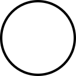
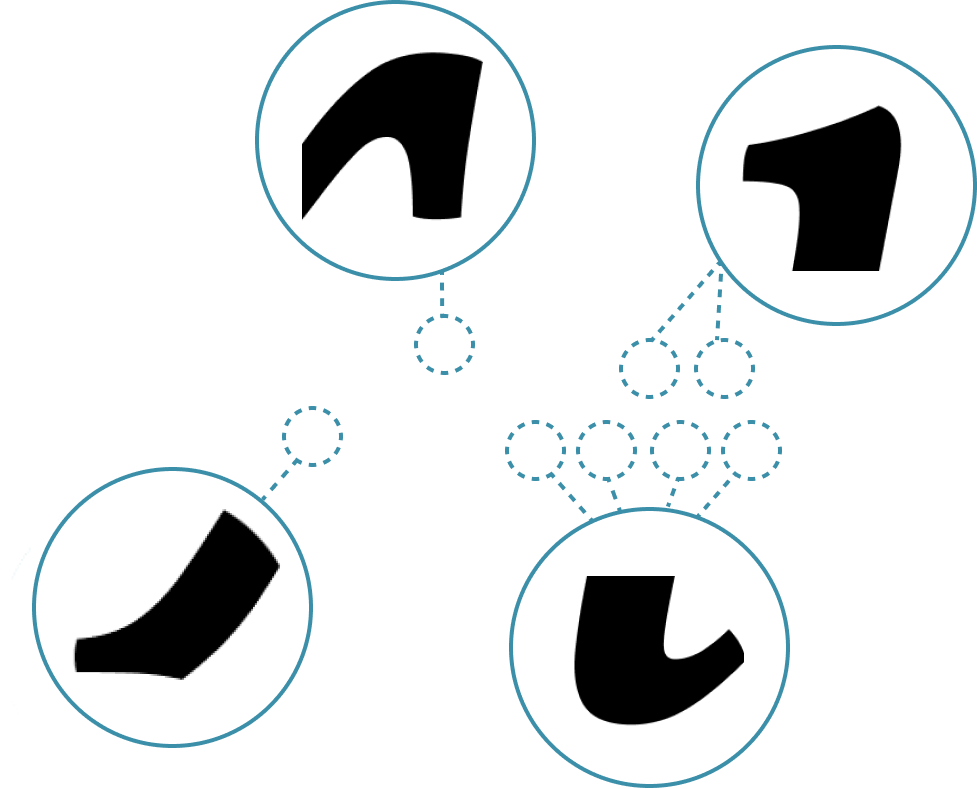

V
o
l
l
k
o
r
n
o
l
l
o
r
n
cc
Vollkorn возник как первый шрифт,
разработанный Фридрихом
Альтхаузеном. Впервые был опубликован
в 2005 году по лицензии Creative
Commons, и вскоре был загружен тысячи
раз и использован во всех видах
веб-проектов и печатных проектов.
О шрифте
Имеет 12 начертаний
Volkorn Regular
Volkorn Medium
Volkorn Semibold
Volkorn Bold
Volkorn ExtraBold
Volkorn Black
Volkorn Italic
Volkorn Medium Italic
Volkorn Semibold Italic
Volkorn Bold Italic
Volkorn ExtraBold Italic
Volkorn Black Italic
Выделяется темными
и мясистыми засечками,
а также упругим видом.
Желание
  ж создана из буквы к
т создана из буквы г
В других шрифтах эти знаки обычно похожи
Ж
Т
АЛ
К
Г
З3
К
Г
б6
У Italic буквы уже не так очевидно созданы друг из друга
В Italic эти знаки больше похожи друг на друга
Ж
Т
З3
К
Г
К
Г
б6
Сравнение знаков Italic и Regular
1
1
?
?
.
.
4
4
5
5
2
2
3
3
!
!
=
=
+
+
6
6
)
)
7
7
8
8
'
'
9
9
|
|
У Vollkorn Italic во многих случаях большие и маленькие буквы довольно сильно отличаются
Аа
Бб
Вв
Гг
Дд
Ее
Жж
Ии
Кк
Лл
Мм
Нн
Пп
Рр
Тт
Уу
Фф
Хх
Цц
Чч
Шш
Ъъ
Ьь
Юю
Яя
Этим шрифтом часто обозначали
мелкие шрифты для повседневного
использования.
Также использовался для упаковок
многих продовольственных
продуктов. Чаще всего - масла
с молоком.